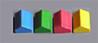
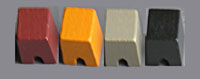
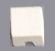
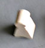
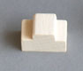
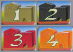
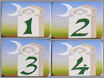

|
|
|
| Domes  Domes identify the
players: Red, Yellow, Blue and Green: Each player starts with
four domes of his color, which will be used during the game to claim
four palaces, one palace of each color. Note that the colors
of the palaces are not related to the colors of the domes..
|
Palaces  Players start with
the same number of palaces in each of four colors; Gray,
Black, Brown and Orange.
|
Stables  Stables are extensions to palaces; they make them bigger and count as palace pieces in all of the scoring rules. |
Merchants
 Merchants form a
conga-line that is threaded among palaces. Merchants adjacent
to a palace score points for the owner.
|
Walls  City walls grow from
the towers at the corners of the board. Walls score points
for the owners of adjacent palaces.
|
| Walls |
Walls (and only
walls) can be placed on the edges of the board, adjacent to a tower or
to another wall. The walls from opposite corners grow toward
each other, but are not allowed to meet. There are no other
restrictions on placement of walls, and there aren't enough walls in
the game that you will ever be unable to place one. |
|
| Meeples |
Meeples form a
"market" that threads among the palaces on the board. The
game starts with a market played in the interior of the
board. Subsequent meeples have to be place adjacent to
exactly one other meeple, counting horizontal and vertical connections,
ignoring diagonals. Effectively, this forces meeples to form
a single line, with possible expansion points at both ends.
If there is no legal expansion point, a new market can be started at
any unoccupied square. Effectively, there is at
most one incomplete market
on the board at any time. It will always be possible to place any
meeples you have. |
|
| Palaces |
There can be only
one incomplete palace
of each color on the board at any time. A palace is
incomplete if
it is not claimed by any player, and if it can still
expand. Palaces can still expand if they are not
claimed, and if there is still room to place a row of meeples between
it and any nearby palaces. New palaces can't be started after
all players have claimed a palace of that color, so when the last
palace of a color is claimed, the remaining palace pieces of that color
become unplayable. |
|
| Stables |
Stables can only be
placed adjacent to a palace (either complete or incomplete), but they
must leave room for a row of meeples, just as palaces must.
Stables effective increase the size of the palaces they adjoin. |
|
| Domes |
Each player has four domes of his color, which can (and eventually must) be used to claim one palace of each of the palace colors. Once a palace is claimed, it can't be claimed again, or expanded by another palace piece. Only the palaces you claim will increase your score. |
| Base scoring for palaces |
Each claimed palace, combined with its adjacent stables, scores one point for each palace or stable piece, plus one point for each adjacent wall tile, plus one point for each adjacent meeple. Based on simple geometry, each wall will score for at most one palace, each meeple may score for one or several palaces, but each meeple will score only once for any particular palace. | |
| Bonus tiles for palaces. |
 |
The four palace
tiles award bonus points for the largest palace of each
color. If two or more palaces are the same size, then the
first palace to attain that size scores. In effect, the when
you claim a larger palace, or enlarge a palace with a stable to create
a larger palace, you claim the bonus tile at that time.
Consequently, because of the palace bonuses, gray palaces are the least
valuable, and orange palaces the most valuable. The owner of
each of the palace bonus tiles may change from time to time during the
game as larger palaces are constructed. |
| Bonus tiles for towers. |
 |
When a claimed
palace first
makes contact with a tower via a wall, the corresponding tower bonus
tile is awarded. This can be due to a palace being claimed,
or to a wall tile being played adjacent to a palace, or to a stable
tile being added which connects a palace to a wall. The two
walls extending from each tower are contending to award the tower
bonuses. Each palace can claim the tower tile through each
wall only once, so palaces can't reclaim the tower by adding more
stables adjacent to the wall, or by adding more walls which are also
adjacent to the palace. Under unusual circumstances, one
palace can claim more than one tower, or can reclaim a tower by
touching the other wall that is connected to the tower. |
| E-Mail: | Go to BoardSpace.net home page |